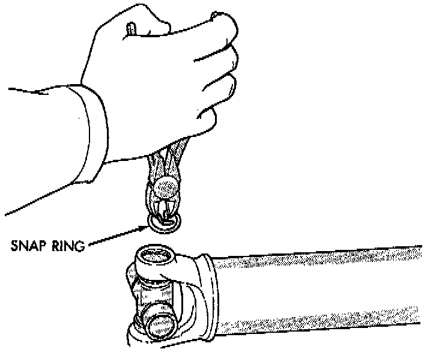
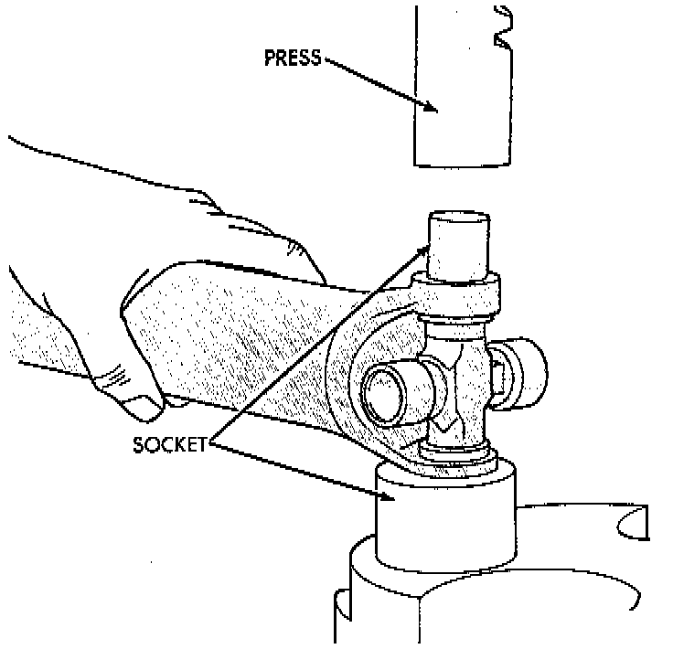
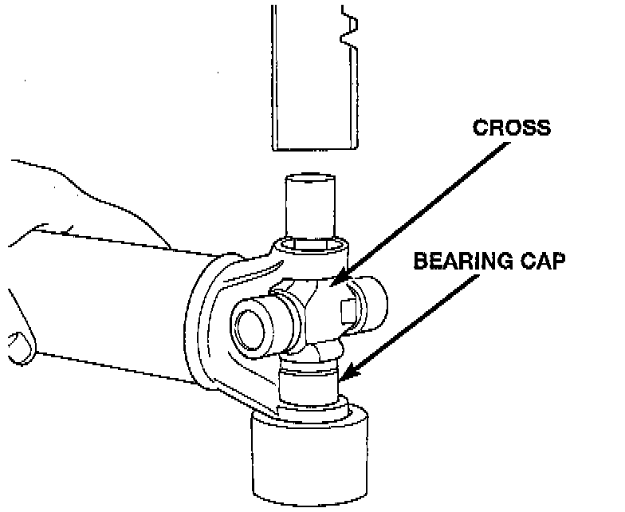
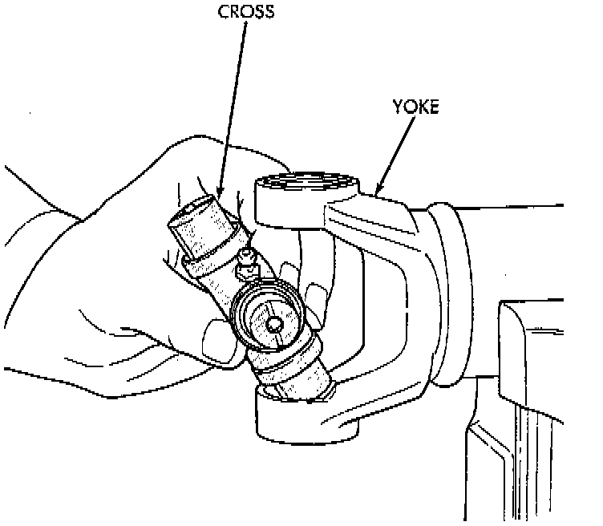
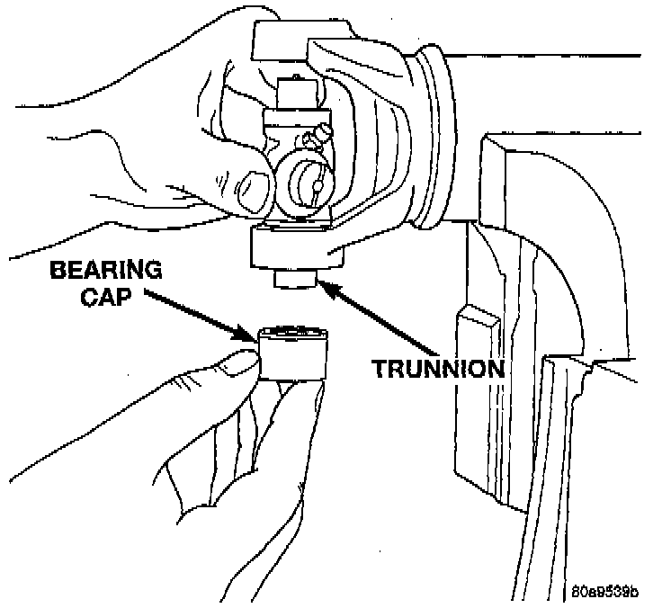

Overhaul
NOTE: Individual components of cardan universal joints are not serviceable. If worn or leaking, they must be replaced as an assembly.DISASSEMBLY
1. Remove the propeller shaft.
2. Using a soft drift, tap the outside of the bearing cap assembly to loosen snap ring.

3. Remove snap rings from both sides of yoke.
4. Set the yoke in an arbor press or vise with a socket whose inside diameter is large enough to receive the bearing cap positioned beneath the yoke.
5. Position the yoke with the grease fitting, if equipped, pointing up.

6. Place a socket with an outside diameter smaller than the upper bearing cap on the upper bearing cap and press the cap through the yoke to release the lower bearing cap.
7. If the bearing cap will not pull out of the yoke by hand after pressing, tap the yoke ear near the bearing cap to dislodge the cap.

8. To remove the opposite bearing cap, turn the yoke over and straighten the cross in the open hole. Then, carefully press the end of the cross until the remaining bearing cap can be removed.
CAUTION: If the cross or bearing cap are not straight during installation, the bearing cap will score the walls of the yoke bore and damage can occur.
ASSEMBLY
1. Apply Extreme Pressure (EP) N.L.G.I. Grade 1 or 2 grease to inside of yoke bores to aid in installation.

2. Position the cross in the yoke with its lube fitting, if equipped, pointing up.

3. Place a bearing cap over the trunnion and align the cap with the yoke bore. Keep the needle bearings upright in the bearing assembly. A needle bearing lying at the bottom of the cap will prevent proper assembly.
4. Press the bearing cap into the yoke bore enough to install a snap ring.
5. Install a snap ring.
6. Repeat Step 3 and Step 4 to install the opposite bearing cap. If the joint is stiff or binding, strike the yoke with a soft hammer to seat the needle bearings.
7. Add grease to lube fitting, if equipped.
8. Install the propeller shaft.